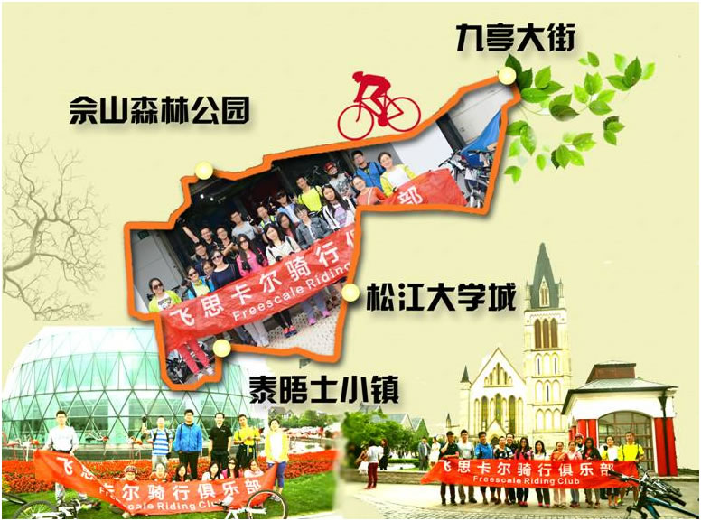

骑行俱乐部之佘山&泰晤士 总结

5月16日，天气甚好。飞思卡尔骑行俱乐部再次踏上征程。由于车辆有限，25个名额此前已被瞬间预约一空。
早上10:00大家如约到达起点九亭大街，简单整装后启程。此次行程依然由谢部长和路领队保驾护航，途径欢乐谷、玛雅水公园、佘山、辰山植物园、大学城，并在泰晤士小镇停留游玩。如此良辰美景、才子佳人，一路依旧心花路放，仿佛忘却了时间飞逝，不知不觉，日落西山，大家不舍地启程返航。
这次没有预约到的童鞋，下次记得设置好邮件rule，抢占先机哦~